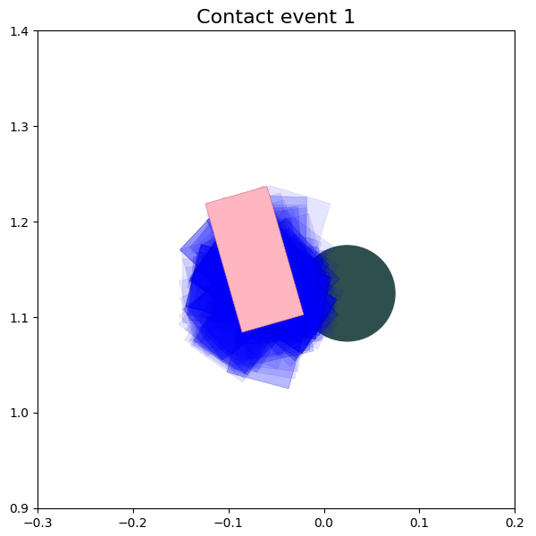
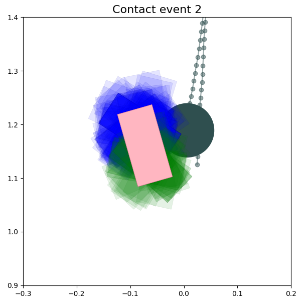
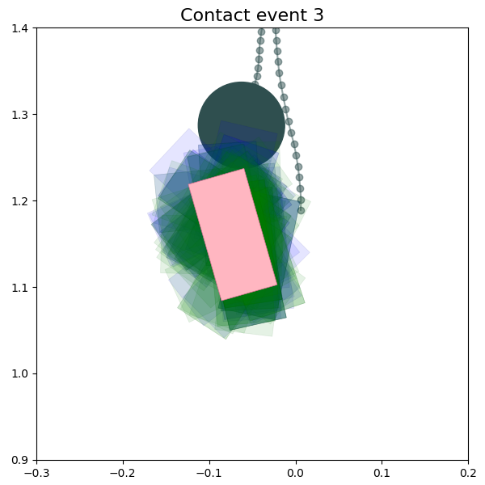
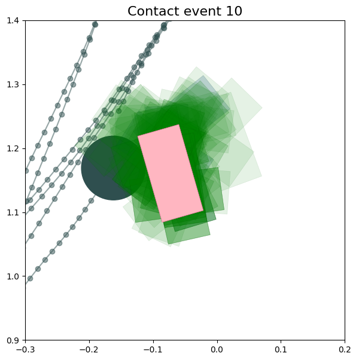
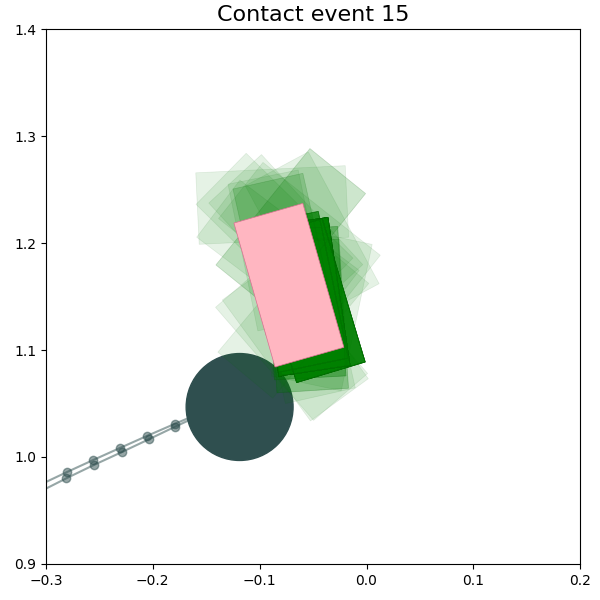
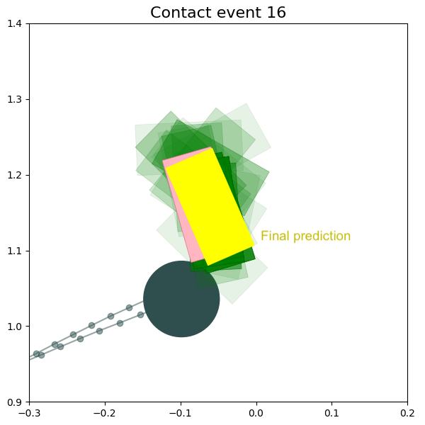

We present a learnable method for object state estimation in blind and contact-rich robotic manipulation settings.
Our approach represents the belief as a weighted particle set, and utilizes differentiable particle filters (DPFs), i.e., a differentiable version of the classic particle filter. By learning particle proposer and observation likelihood estimator models, we show that blind manipulators can localize objects. We learn the measurement update models through supervised learning on a dataset consisting of robot histories. Our results show that incorporating a "negative proposing" algorithm helps in improving the performance of DPFs and accounting for sparse contact observations.
We wish to solve the problem of blind grasping for robotic manipulators by formulating it as a Partially Observable Markov Decision Process (POMDP). This involves applying planning algorithms on the belief, i.e. the probability distribution over the true states.
The belief update in such continuous state spaces with long horizons and sparse observations is challenging. Thus, our objective is to construct a model \( G \) which can learn the belief dynamics (i.e. next belief from current belief, action, observation): \( b' = G(b, a, o) \)
Using Nerfies, you can re-render a video from a novel viewpoint such as a stabilized camera by playing back the training deformations.
There's a lot of excellent work that was introduced around the same time as ours.
Progressive Encoding for Neural Optimization introduces an idea similar to our windowed position encoding for coarse-to-fine optimization.
D-NeRF and NR-NeRF both use deformation fields to model non-rigid scenes.
Some works model videos with a NeRF by directly modulating the density, such as Video-NeRF, NSFF, and DyNeRF
There are probably many more by the time you are reading this. Check out Frank Dellart's survey on recent NeRF papers, and Yen-Chen Lin's curated list of NeRF papers.
@article{park2021nerfies,
author = {Park, Keunhong and Sinha, Utkarsh and Barron, Jonathan T. and Bouaziz, Sofien and Goldman, Dan B and Seitz, Steven M. and Martin-Brualla, Ricardo},
title = {Nerfies: Deformable Neural Radiance Fields},
journal = {ICCV},
year = {2021},
}